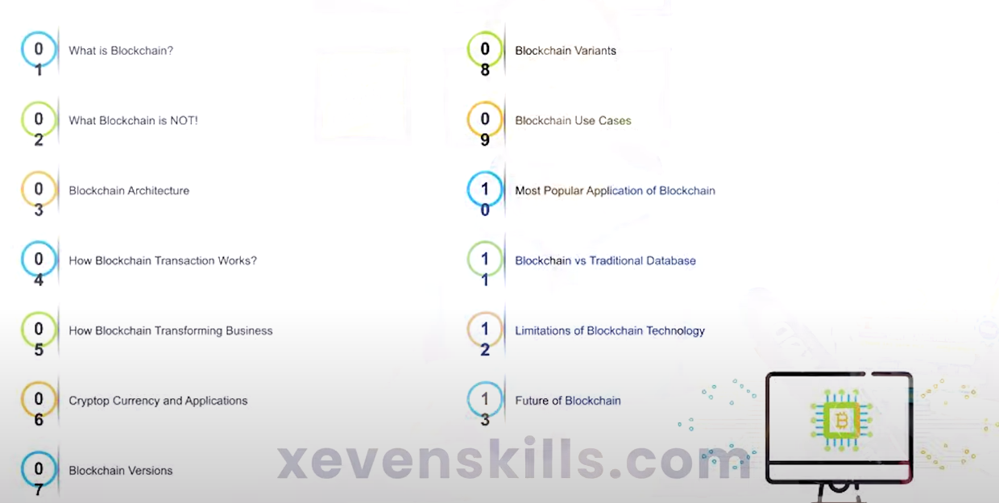

![]()
Applications of Blockchain
What we have seen this year in Global Tech Exhibition regarding Blockchain
Course Introduction:

In this lecture, following points will be covered:
- Evolution of Blockchain
- The history of Blockchain
- How has Blockchain technology grown?
1. Evolution of Blockchain
Imagine you have a special notebook where you write down everything you buy or sell. Now, what if thousands of people had copies of your notebook and every time you wrote something, they wrote it in their copies too. That way, even if someone tries to lie about a transaction, there are thousands of notebooks to prove the truth. This concept is the foundation of blockchain.
Evolution Stages:
- Unique Digital Fingerprints: Think of taking a picture and getting a unique code that represents that picture. If you change even a dot in the picture, the code changes completely. This is the concept behind cryptographic hashes.
- Digital Signatures: It's like putting a unique stamp on a letter you send online to prove it's really from you.
- Shared Notebooks (Blockchain): Combining the two ideas above, Bitcoin came up with a shared notebook system (blockchain) for recording money transactions.
2. The History of Blockchain
Timeline:
- 1970s-1980s: This was the time when the ideas of digital fingerprints and signatures were born.
- 2008: Someone named Satoshi Nakamoto had an idea. What if we use the shared notebook system to create a new kind of money that doesn't need banks? He wrote these ideas down and shared them.
- 2009: Nakamoto turned his idea into reality and created Bitcoin. It was like introducing a new board game to the world, with blockchain as the rules of the game.
Example: Bitcoin is like the first-ever toy made using a new kind of plastic called "blockchain". People loved the toy, but soon realized that the plastic could be used to make so many other things!
3. Growth of Blockchain Technology
- More than Just Money: After Bitcoin, others thought, "If we can use the shared notebook for money, why not other things too?"
- Ethereum: Imagine a vending machine. You put money in, select a snack, and the machine gives you the snack. Ethereum is like a vending machine, but online and much more versatile. It can be programmed to do different tasks when certain conditions are met. These are called "smart contracts".
- Private Notebooks: Some big companies thought, "We like this shared notebook idea, but we want our own private version." So, they created their own versions of blockchain just for themselves or their partners.
- Example: Imagine a group of friends having a private notebook where they only write down their secrets.
- Selling Tokens: Some people made their own versions of coins and sold them to raise money for their projects.
- Example: Imagine if a theme park created its own special coins. You buy these coins and can use them in the park to get on rides or buy snacks. This is similar to how people created and sold tokens using blockchain.
- Everyday Uses:
- Supply Chain: Companies can use the shared notebook to track where a product came from and where it's going, just like tracking a package you ordered online.
- Real Estate: When buying a house, the shared notebook can help prove who owns the house, making the process faster and simpler.
- Voting: In elections, to ensure no one cheats, the shared notebook can be used to record votes.
To Summarize: Imagine a new type of LEGO brick was invented. At first, people only built cars with it. But soon, they realized they could build houses, planes, and so much more. Blockchain is like that LEGO brick. It started with Bitcoin, but now it's being used to build all sorts of digital systems.
In this video, you'll learn:
- Different Careers in Blockchain
- Career Opportunities & Salary Range
- Complete Roadmap, Career, Tech stack & Salary
1. Different Careers in Blockchain
A. Blockchain Developer: These are the builders. Just like someone can be a builder for houses, a blockchain developer builds digital systems using blockchain.
B. Blockchain Consultant: These are the advisers. Imagine someone who helps you decide where and how to build your house. Consultants help businesses figure out how to use blockchain.
C. Blockchain Project Manager: They ensure blockchain projects run smoothly, much like a director in a movie making sure everyone knows their roles.
D. Cryptocurrency Analyst/Trader: They study and trade digital currencies, similar to stock market analysts but for cryptocurrencies like Bitcoin.
E. Cryptocurrency Journalist: Reporters who specialize in blockchain and cryptocurrency news. They're like tech journalists but focused on the blockchain world.
2. Career Opportunities & Salary Range
(Note: The figures are illustrative and based on data as of 2022, and they can vary based on region, experience, and market demand.)
A. Blockchain Developer
- Opportunities: High demand as many companies want to integrate blockchain.
- Salary Range: $70,000 - $200,000 annually.
B. Blockchain Consultant
- Opportunities: Moderate to high, especially in industries looking to adopt blockchain.
- Salary Range: $80,000 - $250,000 annually.
C. Blockchain Project Manager
- Opportunities: Moderate demand, especially in tech companies.
- Salary Range: $60,000 - $180,000 annually.
D. Cryptocurrency Analyst/Trader
- Opportunities: High, especially with the growing interest in cryptocurrencies.
- Salary Range: Varies greatly; could be $50,000 to even $500,000+ based on success in trading.
E. Cryptocurrency Journalist
- Opportunities: Moderate and growing with the rise in cryptocurrency's popularity.
- Salary Range: $40,000 - $90,000 annually.
3. Complete Roadmap, Career, Tech stack & Salary
A. Roadmap for a Blockchain Career
- Education: Start with basics. Learn about blockchain, cryptocurrencies, and how they work.
- Specialization: Decide which career path suits you. Development, consulting, or perhaps journalism?
- Training: Take specialized courses. There are many online platforms offering courses on blockchain.
- Networking: Join blockchain communities and groups. It's like joining a club for car enthusiasts but for blockchain.
B. Career Progression
- Entry-level: Gain experience in smaller projects or internships.
- Mid-level: Handle more complex projects or lead a team.
- Senior/Expert: Become a go-to person in your area, advise top-level management, or even start your own venture.
C. Tech Stack for Blockchain Developer
- Languages: Learn programming languages like Solidity (for Ethereum-based applications) and JavaScript.
- Blockchain Platforms: Get familiar with platforms like Ethereum, Binance Smart Chain, and Cardano.
- Tools: Understand tools like Truffle, Remix, and Metamask.
D. Salary Growth
- Entry-level: Might start at the lower end of the salary range.
- Mid-level: As you gain experience, you can expect a significant bump in your salary.
- Senior/Expert: At the top of the ladder, besides a high salary, you might also earn from consulting, advising, or successful projects.
In a Nutshell: Just like the world of cars has mechanics, designers, and racers, the world of blockchain has developers, consultants, and traders. And just as the auto industry grew over the years, offering more job opportunities and better salaries, the same is expected for blockchain. So, if you're keen on joining this digital revolution, there's a roadmap to guide you, multiple roles to choose from, and a promising career ahead!
In this lecture, following points will be covered:
- Importance of Blockchain
- Why Blockchain matters more than you think?
1. Importance of Blockchain
A. Trust in Transactions
- Example: Think about when you trade toys with a friend. You both have to be there and agree on the trade for it to be fair. With blockchain, even if you're trading with a stranger from far away, you can trust the trade will be fair.
B. No Middleman Needed
- Example: When you buy a game online, usually you need a company like a bank or PayPal to handle the money and make sure you get your game. With blockchain, you can directly buy the game from the seller without needing a third party.
C. Hard to Tamper With
- Example: Imagine if you had a diary that magically creates a red mark every time someone tries to erase or change what you've written. Blockchain is like that diary. Once something is written in it, it's very difficult to change without everyone noticing.
D. Transparency and Openness
- Example: It's like having a community garden where everyone can see who planted what and when. If someone tries to steal a vegetable, everyone will know. Blockchain allows everyone to see transactions, ensuring fairness.
2. Why Blockchain Matters More Than You Think
A. Beyond Just Money
- Example: While most know blockchain because of Bitcoin, it's like knowing the internet just for email. Just as the internet does so much more than just email, blockchain has many uses beyond just Bitcoin.
B. Power to Regular People
- Example: Imagine if, instead of big companies, every individual had a small piece of the internet and got a say in how it works. Blockchain gives regular people more control over their data and transactions, similar to everyone having a piece of the pie.
C. Reducing Fraud
- Example: Consider a valuable collectible toy. With blockchain, there can be a clear record of every person who has owned it, making it hard for someone to sell fakes.
D. Revolutionizing Industries
- Example:
- Healthcare: Using blockchain, patients could have access to their medical records and could give specific doctors or hospitals permission to view them. This way, if you were to visit a new doctor or get treatment in another country, you wouldn't have to wait for lengthy paperwork or worry about translation issues.
- Real Estate: Instead of mountains of paperwork when buying a house, blockchain can simplify the process, making it as easy as clicking a button to transfer ownership.
E. Global Potential
- Example: Just like how smartphones brought the internet to places without computers, blockchain can bring secure financial systems to places without traditional banks. It's like giving everyone, everywhere, a trusted notebook to write in.
In a Nutshell: If you think of the world as a giant playground, blockchain offers a new set of rules that make games fairer, trades more trustworthy, and reduces the need for playground monitors (middlemen). It's not just about digital money but reshaping how we trust and transact in the digital world.
Freelancing Meets Blockchain
1. Trust and Transparency: One major issue in freelancing platforms today is trust. Blockchain can act as a public ledger for freelancer portfolios, verifying their skills, past work, and reviews. It's like having a verified badge on your profile that can't be faked because it's backed by a blockchain.
2. Secure Payments: With smart contracts on blockchain platforms, payments can be automated and made more secure. Think of it like a digital contract that automatically pays a freelancer once the agreed-upon work is delivered and approved.
3. Lower Fees: Current platforms charge both freelancers and clients significant fees. A decentralized platform built on blockchain could potentially reduce these fees, leaving more earnings in freelancers' pockets.
4. Global Payments: Cryptocurrencies built on blockchain can be used to facilitate global payments without the need for currency conversion fees or extended wait times.
Growth Mindset in Tech
Embracing blockchain in freelancing is an excellent example of a growth mindset in action. Those with a growth mindset see challenges as opportunities and believe that abilities and intelligence can be developed. They are more likely to:
- Embrace new technologies like blockchain.
- Adapt to changing work environments.
- Continuously upskill and learn.
On the flip side, a fixed mindset avoids challenges and gives up easily, often seeing effort as fruitless. This mindset can be limiting, especially in a rapidly evolving field like tech.
Freelancing 3.0: The Future
The next wave of freelancing, which we can dub "Freelancing 3.0", could very well be a decentralized system where:
- Freelancers have more control and earn more from their work.
- Clients can easily verify a freelancer's credentials and past work.
- Transactions are transparent, quick, and secure.
In Conclusion: The integration of blockchain into the world of freelancing isn't just a fancy tech upgrade; it's a game-changer. Just as early adopters in the realms of e-commerce or social media platforms reaped the benefits of their foresight, the same can be said for those who embrace the blockchain revolution in freelancing. Stay ahead, stay informed, and embrace change if you aim to grow both academically and financially!
In this lecture, following points will be covered:
- Is blockchain haram or halal in Islam?
- How can non-techies benefit from the blockchain technology?
1. Is blockchain haram or halal in Islam?
Blockchain Technology Itself: Blockchain, as a technology, is neutral and simply a tool or a system. It is a decentralized ledger or database that records transactions in a secure and transparent manner. The technology itself does not inherently conflict with Islamic principles.
However, how it is applied can be subject to Islamic jurisprudential review.
Cryptocurrencies: For instance, cryptocurrencies like Bitcoin, which are built upon blockchain technology, have been a topic of debate among Islamic scholars. Some concerns arise from:
- Speculation and Uncertainty (Gharar): The volatile nature of cryptocurrency prices can be seen as a form of excessive uncertainty, which is discouraged in Islamic finance.
- Anonymity and Misuse: The anonymity feature of some cryptocurrencies might be used for haram (forbidden) activities like money laundering or financing terrorism.
However, other scholars argue that cryptocurrencies can be aligned with Islamic finance principles, especially when they facilitate financial inclusion, equity, and social justice.
The verdict on whether specific applications of blockchain (like certain cryptocurrencies) are halal or haram will largely depend on interpretations by Islamic scholars and the context in which the technology is used.
2. How can non-techies benefit from the blockchain technology?
Absolutely, non-techies can benefit from blockchain in various ways:
1. Transparent Transactions: Imagine you're buying organic produce. With blockchain, you can trace the journey of that apple from the farm to your table, ensuring its authenticity.
2. Secure Investments: Even if you're not a tech expert, you can invest in cryptocurrencies (after due research and consultation) as a form of diversifying assets.
3. Decentralized Platforms: Platforms like decentralized social media or content creation platforms can offer more control over one's data and content, potentially offering better revenue models for creators.
4. Digital Identity: In the future, non-techies might have a digital identity secured on the blockchain, making tasks like verification quicker and more secure.
5. Education: Blockchain certificates and credentials can ensure the authenticity of one's academic qualifications.
6. Real Estate and Assets: Blockchain can simplify the process of buying or selling property or any asset by reducing paperwork and ensuring transparent transactions.
In Conclusion: Even if you're not technically inclined, understanding the basics of blockchain and its potential applications can offer numerous advantages in a variety of sectors. It's like the internet revolution – while one might not know the intricacies of how the internet works, knowing its applications can provide immense benefits.
Understanding the basics of an emerging technology like "Blockchain" is critical to protecting your rights and making money in the future. Blockchain is going to reshape the IT industry!
Why Understanding Blockchain is Critical
Imagine a time when the internet was just starting. Many people brushed it off, thinking it was just a trend or something too complex to understand. But those who took the time to learn about it, who understood its potential, are the ones benefiting from it the most today – either because they have more secure jobs in the tech industry or because they made early investments in internet-based companies.
Now, think of blockchain as the "new internet" of our era. It's like a new game on the playground, and those who learn the rules first will be the champions of tomorrow.
Protecting Your Rights
Imagine if every time you wrote something in a notebook, thousands of people made a copy of it. Now, if someone tries to change or erase what you wrote, all those copies serve as a witness, making it near impossible to alter the truth. That's how blockchain works – it ensures transparency and security.
By understanding blockchain, you'll be more equipped to protect your rights, especially in a digital age where data breaches and identity theft are rampant. It's like knowing how to lock your house properly in a neighborhood that's prone to break-ins.
Making Money in the Future
Remember the early days of companies like Amazon or Google? Those who saw the potential and invested early reaped massive rewards. Similarly, understanding blockchain can provide lucrative opportunities, whether through investing in cryptocurrency, starting a blockchain-based business, or offering blockchain consultancy services.
It's akin to being in a gold rush and knowing where to dig. While not all blockchain ventures will turn to gold, having the foundational knowledge will give you a discerning eye to spot the potential winners.
Reshaping the IT Industry
Every so often, an innovation comes along that redefines an industry. Like how smartphones transformed the mobile industry, blockchain is set to revolutionize IT. It offers a more secure, transparent, and decentralized way of conducting digital operations, from financial transactions to supply chain management.
Imagine a world where sending money to another country doesn't require banks with their fees and waiting times, or where you can trace the origin of the food you buy, ensuring it's genuinely organic. Blockchain can make all of this possible, and so much more.
In a Nutshell: Embracing blockchain is like putting on a pair of futuristic glasses. While everything may look the same at first, these glasses allow you to see new opportunities, risks, and a clearer path to a prosperous digital future. The wave of blockchain is coming, and understanding it ensures you're not just riding it, but steering your ship confidently through the waters of innovation.
What is Blockchain?
Blockchain can be thought of as a digital ledger (like a big digital notebook) that is shared among a network of computers. Each entry in this notebook is a block, and they are all connected in a chain, hence the name 'blockchain'.
Analogy: Imagine a book. Each page of this book has a list of events, and once you fill up a page, you move on to the next. You can always look back at the previous pages (blocks) but can't easily change what's written without making it obvious that you've made an edit. Everyone has a copy of this book, so if someone tries to rewrite an event on one page, all other copies would show the original, making the change evident.
How Blockchain Technology Works?
- Transactions: When someone initiates a digital activity, like sending digital currency to someone else, it creates a transaction.
- Verification: This transaction is broadcast to a network of computers (often called nodes). These computers work to verify the transaction, ensuring it's valid. Think of this as a group of accountants checking to make sure you actually have the money you're trying to send.
- Blocks: Once verified, this transaction is stored in a block with other transactions. It's like adding an entry to a page in our book analogy.
- Hashing: Each block has a unique code called a 'hash'. It also references the hash of the previous block in the chain. This creates a connected chain of blocks. Imagine every page in our book having a unique stamp that also includes a reference to the stamp from the previous page. This ensures pages (blocks) are in order and haven't been tampered with.
- Consensus: For a new block to be added to the chain, the network must reach consensus, meaning the majority agrees that the block is valid. It's like a group vote, where the majority needs to agree before moving forward.
- Immutable: Once a block is added, it's very hard to alter. This immutability is what makes blockchain secure. In our book analogy, it's like writing in pen instead of pencil. You can't easily erase or change it without everyone noticing.
In Simple Terms: Blockchain is like a shared digital book where everyone can make entries. Each page of this book (block) has a unique stamp and references the previous page's stamp. Everyone has a copy of this book, and the majority must agree before a new page is added. Once written, it's tough to change what's on a page, ensuring transparency and trust in the system.
The Power of Blockchain is that it increases trust, security, transparency, and the traceability of data shared across a business network — and delivers cost savings with new efficiencies. Zero-knowledge proofs offer a secure method to validate information needed to complete cryptocurrency transactions and verify users' identities while keeping private data hidden.
1. Power of Blockchain
Trust: The decentralized nature of blockchain means that no single entity controls the information. It's like a community garden where everyone can see and contribute but no one individual owns it. This ensures fairness and honesty.
Security: Once data is added to a blockchain, it's very hard to alter. Imagine writing something in pen – it’s permanent and can't be easily erased.
Transparency: All participants in a blockchain network can view the entries. It's like a transparent locker where everyone can see what's inside, but only those with the key (permission) can add or take something.
Traceability: Every transaction is recorded, so it’s easy to trace back an item or transaction to its origin. Consider it like breadcrumbs in a forest; you can always follow them back to where you started.
Cost Savings & Efficiency: Without middlemen, transactions can be more direct and faster, saving money. Think of it as direct shopping from a farmer rather than through a store.
2. Zero-Knowledge Proofs
What are they? Zero-knowledge proofs (ZKPs) are cryptographic methods that allow one party to prove to another that a statement is true, without revealing any specific information about the statement itself.
Analogy: Imagine you have a locked treasure chest, and you want to prove to a friend that there's gold inside. But, you don’t want to open the chest. Instead, you show them the key, turn your back, and allow them to try the key on the lock without looking. They can't see the gold, but they now know you have the correct key for the chest, proving there’s something valuable inside.
In the realm of cryptocurrencies:
- Transaction Validation: ZKPs can prove a transaction is valid (e.g., someone has enough funds) without revealing the exact amount or other transaction details.
- Identity Verification: ZKPs can confirm a user’s identity without revealing the actual identity data (like showing you're old enough to enter a club, without revealing your exact age or name).
In Summary: Blockchain is like a community-led transparent locker system that's super secure and promotes trust. Zero-knowledge proofs, on the other hand, are like magic tricks that prove something's true without revealing the secret behind it, ensuring both validation and privacy. Both of these concepts together can revolutionize the way we do transactions and handle data, making it more secure, private, and trustworthy.
In this lecture, following points will be covered:
- Core of Blockchain
- What are the core components of Blockchain?
- What is Smart Contract in Blockchain?
1. Core of Blockchain
The core of blockchain lies in its ability to provide a decentralized, tamper-resistant ledger. Instead of relying on a single entity (like a bank) to keep records, blockchain distributes the responsibility across many computers, ensuring that no single point of control or failure exists.
Analogy: Think of blockchain as a diary. However, instead of one person writing and keeping the diary, thousands of people have a copy. Every time an event happens (a transaction), everyone writes it down. If one person makes a mistake or tries to lie about the event, the others can cross-check and correct them, ensuring the integrity of the information.
2. Core Components of Blockchain
There are several key components that together make up the blockchain:
a) Blocks: These are like pages in our diary. Each block contains a list of transactions. Once a block is filled with transactions, a new block is created.
b) Hash: Every block has a unique code called a hash. It's like a fingerprint for the block. It also references the hash of the previous block, connecting them in a chain.
c) Nodes: These are the computers that participate in the blockchain network. They validate and record transactions. Imagine them as the people who have a copy of our diary and write in it.
d) Consensus Mechanism: This is the method by which the nodes agree on the validity of a transaction. It's the rulebook everyone follows to ensure they're on the same page.
e) Decentralization: Unlike traditional databases, where one entity has control, blockchains distribute control across many nodes. It's the principle of many people keeping the diary instead of one.
3. What is a Smart Contract in Blockchain?
A Smart Contract is a self-executing contract where the terms of agreement or conditions are written into lines of code. They automatically execute actions when certain conditions are met, ensuring trust without intermediaries.
Analogy: Imagine a vending machine. You select a snack, insert the correct amount of money, and the machine gives you the snack. There's no human intervention required. The vending machine acts on its own based on the coded "agreement" (if correct money for a snack is provided, release the snack). In the blockchain world, this automated "agreement" is a smart contract.
For instance, in a blockchain setting, a smart contract could be set up to automatically transfer ownership of a property from one person to another once payment is confirmed, all without needing lawyers or escrow services.
To Sum Up: At the heart of blockchain is the concept of decentralized trust, ensuring that data is transparent and can't be tampered with. The core components like blocks, hashes, and nodes uphold this system. Smart contracts, on the other hand, revolutionize how agreements are made and fulfilled, ensuring automatic, trustless transactions on the blockchain.
In this lecture, following points will be covered:
- Different types of Blockchain Technology
- What is Node?
1. Different Types of Blockchain Technology
Blockchain technologies can be categorized based on their accessibility and who has permission to participate in their networks. Here are the primary types:
a) Public Blockchains:
- Definition: Open to anyone, they are transparent, and any user can join the network and validate and transmit transactions.
- Examples: Bitcoin, Ethereum.
- Pros: Highly decentralized and secure due to a large number of participants.
- Cons: Can be slower and less efficient due to the vast number of participants involved.
b) Private Blockchains:
- Definition: Restricted to specific participants. An organization might use a private blockchain to improve specific internal processes.
- Examples: Hyperledger, Corda.
- Pros: Faster, more efficient, and can be customized to the organization's needs.
- Cons: Less decentralized, relying on fewer nodes, which can raise concerns about transparency and security compared to public blockchains.
c) Consortium (or Federated) Blockchains:
- Definition: Operated by a group rather than a single entity. The consensus process is controlled by pre-selected nodes.
- Examples: Quorum, B3i (for insurance).
- Pros: It balances out the lack of trust in private networks, providing a touch more transparency.
- Cons: Still more centralized compared to public blockchains.
d) Hybrid Blockchains:
- Definition: Combines features of public and private blockchains. Users can decide what data remains private and what data is made public.
- Examples: Dragonchain.
- Pros: Offers the benefits of both private and public blockchains – flexibility, controlled access, and a broader consensus mechanism.
- Cons: Implementing and managing a hybrid system can be complex.
2. What is a Node?
In the realm of blockchain technology, a node is essentially a computer that participates in the blockchain network. Each node has a full copy or a partial copy of the blockchain and works under a consensus system to agree on the validity of transactions.
Why are nodes essential?
- Decentralization: Nodes contribute to the decentralization of the blockchain network. Instead of a central server or authority, multiple nodes ensure that the network remains operational even if some nodes fail.
- Validation: Nodes validate transactions based on the blockchain's protocol, ensuring the integrity and authenticity of the data.
- Security: The more nodes in the network, the more secure it becomes. To manipulate the blockchain, a bad actor would need to control more than half the nodes, which becomes increasingly difficult as more nodes join the network.
In Summary: Blockchain technology varies in its design and permissions, from the completely open public blockchains to more controlled private ones, and the hybrids that aim to offer the best of both worlds. Nodes are the backbone of these networks, validating transactions and maintaining the decentralized integrity that makes blockchain so unique and secure.
In this lecture, following points will be covered:
- What is Miner in Blockchain?
- What is Mining?
- What is Block in Blockchain Technology?
1. What is a Miner in Blockchain?
A miner is an individual or entity that uses computing power to process and validate transactions on a blockchain network. Miners play a crucial role in maintaining the integrity and security of the system.
Analogy: Think of miners as the accountants or auditors of the blockchain world. They review and verify transactions, ensuring they're legitimate before adding them to the ledger.
2. What is Mining?
Mining is the process through which new transactions are verified and added to the blockchain. It involves solving complex cryptographic puzzles, which requires a significant amount of computational power. The first miner to solve the puzzle gets the right to add a new block to the blockchain and is rewarded with newly minted (or "mined") cryptocurrency tokens, like Bitcoin.
Key Points:
- Proof-of-Work: Most blockchains (like Bitcoin) use a consensus mechanism called Proof-of-Work (PoW) for mining. Miners compete to solve a cryptographic puzzle, and the first to solve it gets to add the next block. This mechanism ensures security and deters spam or malicious attacks.
- Rewards: Miners receive two types of rewards – a block reward (newly minted coins) and transaction fees from users who want their transactions processed.
Analogy: Imagine a giant puzzle competition where thousands of participants are trying to solve a challenging puzzle. The first one to solve it gets a prize. In the blockchain world, solving the puzzle equates to mining, and the prize is cryptocurrency tokens.
3. What is a Block in Blockchain Technology?
A block is a collection or a set of data (primarily transactions) that is added to the blockchain. Each block contains:
- Transactions: Details of sender, receiver, amount, etc.
- Timestamp: When the block was created.
- Hash: A unique alphanumeric code that identifies the block. It's like a digital fingerprint.
- Previous Block's Hash: This connects the block to the one before it, creating a chain of blocks.
Key Points:
- Immutable: Once data is added to a block and that block is added to the blockchain, it's very difficult to alter the data. This ensures data integrity.
- Sequential: Blocks in a blockchain are sequential. Each block references the one before it and informs the one after, creating a connected chain.
Analogy: Think of a blockchain as a book, and each block is a page in that book. Each page has a story (transactions), a page number (hash), and a reference to the previous page (previous block's hash). Once written, the story on a page can't be changed, and pages follow sequentially one after the other.
In Summary: Miners are the guardians of blockchain networks, ensuring the authenticity of transactions through the process of mining. They add these transactions to blocks, which are then linked together in a chain to form the complete blockchain ledger. The interconnected nature of blocks and the role of miners together ensure the security, transparency, and immutability of blockchain technology.
In this lecture, following points will be covered:
- Different Types of Blockchain
- Consensus Algorithm for Blockchain
- Blockchain vs Traditional Database
1. Different Types of Blockchain
a) Public Blockchains:
- Definition: Open for anyone to join, participate, and see all the data.
- Examples: Bitcoin, Ethereum.
- Pros: Highly decentralized; promotes transparency.
- Cons: Generally slower due to the large number of participants.
b) Private Blockchains:
- Definition: Participation is limited to invited members. They can be more centralized.
- Examples: Hyperledger, Corda.
- Pros: Faster transaction times; more privacy.
- Cons: Less transparent; potential for centralized control.
c) Consortium (or Federated) Blockchains:
- Definition: Operated by a group of entities or businesses. They control the consensus process.
- Examples: B3i (insurance consortium), R3 (banking consortium).
- Pros: Greater efficiency with some level of trust among known participants.
- Cons: Not as decentralized as public blockchains.
d) Hybrid Blockchains:
- Definition: Combines elements of public and private blockchains.
- Examples: Dragonchain.
- Pros: Flexibility in controlling who sees what.
- Cons: Can be complex to implement.
2. Consensus Algorithm for Blockchain
Consensus algorithms are techniques used to achieve agreement on data validity within the blockchain network. Here are some key ones:
a) Proof of Work (PoW):
- Used By: Bitcoin, Litecoin.
- How it Works: Miners compete to solve a complex mathematical puzzle. The first to solve it gets to add a block and is rewarded.
- Pros: Highly secure.
- Cons: Energy-intensive.
b) Proof of Stake (PoS):
- Used By: Ethereum (future plans), Cardano.
- How it Works: Validators are chosen to create a new block based on their stake (amount of cryptocurrency) in the network.
- Pros: Less energy consumption than PoW.
- Cons: Could promote coin concentration.
c) Delegated Proof of Stake (DPoS):
- Used By: EOS, Lisk.
- How it Works: Coin holders vote for a few delegates who validate transactions and produce blocks.
- Pros: Faster transactions.
- Cons: Less decentralized than PoW and PoS.
d) Proof of Authority (PoA):
- Used By: VeChain.
- How it Works: Transactions are validated by approved accounts or validators.
- Pros: Efficient and scalable.
- Cons: Centralized trust.
3. Blockchain vs Traditional Database
a) Structure:
- Blockchain: Chains of blocks, where each block references the previous one.
- Traditional Database: Tables with rows and columns.
b) Control:
- Blockchain: Decentralized; many participants have control, especially in public blockchains.
- Traditional Database: Centralized; one entity or group has control.
c) Transparency:
- Blockchain: Public blockchains offer complete transparency; all transactions can be viewed by anyone.
- Traditional Database: Access controls are in place; data visibility is restricted.
d) Immutability:
- Blockchain: Once data is added, it's nearly impossible to change.
- Traditional Database: Data can be altered or deleted by those with necessary permissions.
e) Usage:
- Blockchain: Ideal for transactional data, ensuring trust, and immutability.
- Traditional Database: Suitable for large volumes of data that might need to be modified or updated regularly.
In Summary: While blockchain and traditional databases have their own merits, blockchain's decentralized nature, combined with its emphasis on transparency and immutability, makes it a groundbreaking technology with applications beyond just cryptocurrency. Understanding the consensus mechanisms and the different types of blockchains can help in selecting the right configuration for various use-cases.
In this lecture, following points will be covered:
- What is E-commerce business?
- How Blockchain works in E-commerce?
1. What is E-commerce Business?
E-commerce (Electronic Commerce) refers to the buying and selling of goods and services using the internet. It also includes the transfer of money and data to execute these transactions.
a) Types of E-commerce:
- B2C (Business-to-Consumer): Businesses selling to the general public. Example: Amazon.
- B2B (Business-to-Business): Businesses selling to other businesses. Example: Alibaba.
- C2C (Consumer-to-Consumer): Consumers selling directly to other consumers. Example: eBay.
b) Components:
- Online Shopping Websites: Platforms where consumers can browse and purchase products.
- Electronic Funds Transfer: Moving funds electronically rather than with paper money.
- Online Transaction Processing: Capturing and processing payment data.
- Electronic Data Interchange: Transfer of data between businesses.
c) Benefits:
- Convenience: Shop anytime, anywhere.
- Broader Selection: Access to international sellers and niche products.
- Price Comparisons: Easily compare prices across multiple sellers.
2. How Blockchain Works in E-commerce?
Blockchain can revolutionize the E-commerce sector by making transactions more secure, transparent, and decentralized.
a) Payment Transactions:
- Cryptocurrency Payments: Enables merchants to accept payments in cryptocurrencies like Bitcoin, reducing transaction fees and eliminating chargebacks.
- Smart Contracts: Automated contracts that enforce and execute the terms of an agreement without intermediaries. For example, releasing payment to a seller only after the buyer confirms product receipt.
b) Supply Chain and Provenance:
- Transparent Supply Chains: Blockchain can track and verify the origin and journey of products, assuring consumers of authenticity and ethical sourcing.
- Counterfeit Prevention: Brands can verify the authenticity of their products, deterring fake reproductions.
c) Identity and Security:
- Secure Customer Data: With decentralized storage, customer data is less vulnerable to breaches.
- Digital Identity: Blockchain can provide a secure way for customers to own and control their digital identities, streamlining registration and login processes.
d) Loyalty and Rewards:
- Token-Based Rewards: Companies can issue their own tokens as loyalty points, which can be traded, sold, or redeemed.
- Transparent Loyalty Programs: Blockchain ensures that loyalty points are issued, redeemed, and tracked transparently.
e) Decentralized Marketplaces:
- P2P Platforms: Blockchain can facilitate peer-to-peer E-commerce platforms, minimizing fees and maximizing trust.
f) Reviews and Reputation:
- Immutable Reviews: Customer reviews stored on blockchain cannot be altered or deleted, ensuring genuine feedback.
- Trustworthy Seller Profiles: Sellers' histories and reputations can be securely and transparently tracked.
In Summary: E-commerce, the digital marketplace of goods and services, is seeing an integration with blockchain technology. This integration offers enhancements in trust, transparency, and efficiency. From transparent supply chains to secure and streamlined transactions, blockchain can address many challenges faced by the E-commerce industry and offer a more robust and customer-friendly ecosystem.
In this lecture, following points will be covered:
- How Blockchain is important in Public records?
- Blockchain & Public Record
- Public Blockchain
1. How Blockchain is Important in Public Records?
Public records, ranging from birth and death certificates to property titles and business registrations, are essential documents that governments and institutions maintain. Here's why blockchain is becoming important for such records:
a) Immutability: Once data is recorded on a blockchain, it's nearly impossible to alter. This ensures that public records remain untampered.
b) Transparency: Blockchain provides a transparent ledger where any changes or additions to records are visible and verifiable by permitted entities.
c) Decentralization: Rather than relying on a single entity to verify and store records, blockchain distributes the responsibility across a network, reducing risks of corruption or mistakes.
d) Security: Advanced cryptographic techniques ensure that records are secure and resistant to unauthorized changes or hacks.
e) Streamlined Access: With proper permissions, individuals can access their records on a blockchain platform without the bureaucracy and delays of traditional systems.
2. Blockchain & Public Record
a) Land Titles and Property Records: Countries like Sweden are testing blockchain for land registries. This ensures that property ownership is clear, indisputable, and resistant to fraudulent claims.
b) Birth and Death Certificates: Storing these on blockchain can minimize paperwork and ease processes like inheritance or claiming social services.
c) Business Registrations and Licenses: Companies can register using blockchain, ensuring transparent business histories and easier regulatory compliance checks.
d) Voting: Blockchain can be used to record and verify votes, promoting transparent and tamper-proof electoral processes.
e) Academic Credentials: Universities can issue degrees on blockchain, ensuring that employers can easily verify a candidate's qualifications.
f) Medical Records: Patients' histories can be securely and immutably stored on blockchain, ensuring data integrity and simplifying access for healthcare providers.
3. Public Blockchain
A public blockchain is a decentralized platform where anyone can join and participate in the network, as opposed to private blockchains where access is restricted.
a) Open to All: Anyone can validate transactions and participate in the consensus process.
b) Transparency: All transactions are publicly accessible, fostering an environment of trust and openness.
c) Security: Given the decentralized nature, it's difficult for any single entity to take control or alter the data.
d) Examples: Bitcoin and Ethereum are two of the most well-known public blockchains.
e) Consensus Mechanisms: Public blockchains rely on mechanisms like Proof of Work (PoW) or Proof of Stake (PoS) to validate and add transactions to the chain.
f) Usage Scenarios: Public blockchains are suitable for scenarios that require trust among untrusted participants, such as cryptocurrencies.
In Summary: Blockchain's unique features, including transparency, immutability, and security, make it an ideal solution for maintaining public records. Whether it's property deeds, academic qualifications, or business licenses, blockchain ensures that these records are kept securely, transparently, and are easily verifiable. Public blockchains play a critical role in this ecosystem, offering platforms that prioritize openness and trust.
In this lecture, following points will be covered:
- What are the components of Blockchain?
- Do you need Blockchain?
- Why do you need Blockchain?
1. What are the Components of Blockchain?
Blockchain is a decentralized digital ledger that consists of several key components:
a) Blocks:
- Definition: Each block contains a set of transactions, a timestamp, and a cryptographic hash.
- Function: Blocks store information about transactions like date, time, and amount.
b) Chain:
- Definition: Blocks are linked together in chronological order, forming a chain.
- Function: Ensures the integrity of data. If one block is tampered with, it would affect the entire chain, making alterations evident.
c) Nodes:
- Definition: Computers or servers that participate in the blockchain network.
- Function: Every node has a copy of the entire blockchain. They validate and relay transactions, ensuring decentralized control.
d) Cryptographic Hash:
- Definition: A function that converts transaction data into a fixed string of numbers and letters.
- Function: Ensures the integrity of data. Even a tiny change in the transaction will produce a completely different hash, making tampering evident.
e) Consensus Mechanisms:
- Definition: Rules and processes that determine how transactions are verified on the blockchain.
- Examples: Proof of Work (PoW), Proof of Stake (PoS), and Delegated Proof of Stake (DPoS).
- Function: Ensures that all nodes agree on the validity of transactions.
f) Smart Contracts:
- Definition: Automated, self-executing contracts with the agreement directly written into code.
- Function: Facilitates, verifies, and enforces the negotiation or performance of a contract without intermediaries.
2. Do You Need Blockchain?
a) Decentralization Requirement: If you require a system where no single entity has control, blockchain might be for you.
b) Data Immutability: If it's critical that once data is stored, it can't be tampered with, then blockchain offers that assurance.
c) Transparency Needs: If you require a system where transactions are open and verifiable by all parties, consider blockchain.
d) Intermediary Issues: If intermediaries in your processes cause delays or additional costs, blockchain's peer-to-peer nature can be a solution.
e) Trust Concerns: In scenarios where parties don't trust each other but need to collaborate, blockchain can instill trust.
f) Not Always the Answer: If your use case doesn't need decentralization, immutability, or transparency, traditional databases might be more efficient.
3. Why Do You Need Blockchain?
a) Enhanced Security: Transactions must be agreed upon before recorded. Once approved, they're encrypted and linked to the previous transaction.
b) Increased Transparency: All network participants share the same documentation, which can only be updated through consensus.
c) Reduced Costs: By eliminating third-party verifications and reducing the need for intermediaries, costs can be reduced.
d) Speed and Efficiency: Transactions are processed faster and more efficiently as paper-heavy processes become automated.
e) Improved Traceability: An audit trail ensures asset origins and prevents fraud.
f) Decentralized Nature: Reduces risks of central control, single points of failure, and centralized hacks.
In Summary: While blockchain has transformative potential across various sectors, it's essential to evaluate whether its features align with your specific needs. Adopting blockchain should be based on genuine use cases that benefit from its unique properties, not just because of the hype surrounding the technology. If your operations can benefit from decentralization, transparency, and enhanced security, then blockchain might be the right solution for you.
In this lecture, following points will be covered:
- What is a Blockchain Business Model?
- Blockchain Model
1. What is a Blockchain Business Model?
A blockchain business model refers to the methodology and framework businesses adopt to create value and generate revenue using blockchain technology. Unlike traditional business models, blockchain business models may prioritize decentralization, token-based incentives, and peer-to-peer interactions.
a) Tokenization:
- Assets, both tangible (like real estate) and intangible (like digital art), can be converted into tokens on a blockchain, facilitating trading, ownership verification, and fractional ownership.
b) Peer-to-Peer Transactions:
- Eliminating intermediaries. For example, instead of relying on banks, individuals can send cryptocurrencies directly to one another.
c) Decentralized Autonomous Organizations (DAOs):
- Organizations run by rules encoded in smart contracts without a centralized control structure. Members make decisions collectively.
d) Micropayments:
- The ability to make small payments without prohibitive transaction fees, enabling new monetization strategies for online content, for instance.
2. Blockchain Model
While "Blockchain Model" can refer to the business approach as discussed, it can also denote the architectural and operational model of the blockchain itself. Here are a few distinct models:
a) Public Blockchains:
- Open to Everyone: Anybody can participate, validate transactions, or mine new blocks.
- Examples: Bitcoin, Ethereum.
- Use Case: Suitable for scenarios that need decentralization at the forefront, such as cryptocurrencies.
b) Private Blockchains:
- Restricted Participation: Only entities invited can participate.
- Examples: Many corporate or consortium blockchains.
- Use Case: Used often by businesses for internal processes or within a consortium of firms.
c) Consortium Blockchains:
- Controlled by a Group: Multiple organizations run nodes and make decisions.
- Examples: R3's Corda, Hyperledger.
- Use Case: Suitable for business collaborations where participants want to retain control but still need decentralization.
d) Hybrid Blockchains:
- Combination: Mix features of public and private blockchains.
- Example: Dragonchain.
- Use Case: When businesses need to record some data publicly but keep other data private.
e) Token Economic Model:
- Framework for how the tokens in a blockchain ecosystem will be distributed, used, and how they can create value.
- Factors include token supply, utility, distribution method, and incentives for network participants.
In Summary: A blockchain business model is a transformative approach to creating and sharing value through decentralized technologies. These models often pivot on the concepts of tokenization, decentralization, and trustless interactions. The blockchain model, from an architectural standpoint, dictates how the blockchain operates, who can participate, and what its primary objectives are. Understanding the intricacies of each can help businesses and developers align their goals with the right model.
In this lecture, following points will be covered:
- What are the challenges of Blockchain?
- Major challenges faced by Blockchain Industry
- Blockchain security challenges
- What are the challenges of implementing Blockchain?
1. What are the Challenges of Blockchain?
Blockchain, while revolutionary, is not without its challenges. These can be broadly categorized into technical, operational, and regulatory challenges.
2. Major Challenges Faced by the Blockchain Industry
a) Scalability:
- Blockchains, especially public ones like Bitcoin, can handle only a limited number of transactions per second, making scaling a significant concern.
b) Energy Consumption:
- Some consensus algorithms, like Proof of Work used in Bitcoin, consume vast amounts of energy, raising environmental concerns.
c) Interoperability:
- With various blockchain networks in existence, ensuring these networks communicate seamlessly is a challenge.
d) Regulatory and Legal Concerns:
- As a new technology, many jurisdictions lack clear regulations around blockchain and cryptocurrencies, leading to uncertainties for businesses.
3. Blockchain Security Challenges
a) 51% Attacks:
- If a single miner or mining pool gains 51% control of a network's computational power, they can double-spend coins and disrupt the network.
b) Smart Contract Vulnerabilities:
- If not coded correctly, smart contracts can have vulnerabilities that attackers can exploit.
c) Quantum Computing Threat:
- The rise of quantum computers may pose threats to blockchain's cryptographic security in the future.
d) Key Management:
- Losing a private key means losing access to assets on a blockchain. Ensuring secure and accessible key management systems is crucial.
4. What are the Challenges of Implementing Blockchain?
a) Integration with Existing Systems:
- For businesses, integrating blockchain solutions with current infrastructures can be complex and costly.
b) Talent Shortage:
- There's a scarcity of professionals with deep blockchain expertise, making it challenging to develop and implement solutions.
c) Misunderstandings and Miseducation:
- Many people misunderstand or lack knowledge about blockchain, leading to resistance or incorrect implementations.
d) Data Privacy Concerns:
- Especially in public blockchains, ensuring data privacy while maintaining transparency can be tricky.
e) Cost of Implementation:
- Setting up a blockchain, especially a private or consortium one, can be capital intensive.
f) Network Size:
- For a blockchain to be secure and decentralized, a substantial number of participants (nodes) is essential. Achieving this network size can be challenging, especially for new or niche solutions.
In Summary: While blockchain holds immense promise in revolutionizing various sectors, it's not without its set of challenges. Addressing these challenges requires technological innovation, industry collaboration, and clear regulatory frameworks. Recognizing these hurdles is the first step towards devising strategies to overcome them and harnessing the full potential of blockchain technology.
In this lecture, following points will be covered:
- History of Money
- Evolution of Money Model
- What is Cryptocurrency Mining?
- What is Cryptocurrency?
1. History of Money
a) Barter System:
- Definition: Direct exchange of goods and services.
- Limitation: Required a "double coincidence of wants" (both parties want what the other has).
b) Commodity Money:
- Definition: Goods used as a medium of exchange because they have intrinsic value.
- Examples: Salt, cattle, precious metals.
c) Metallic Money:
- Definition: Coins made from metals (gold, silver) due to their durability, divisibility, and intrinsic value.
d) Paper Money:
- Origin: Started as promissory notes representing a metal deposit.
- Evolution: Later, governments and banks issued paper money without the need for metal backing.
e) Bank Money:
- Definition: Digital or virtual money stored in bank databases.
- Use: Most modern transactions use bank money via credit/debit cards, online banking, etc.
2. Evolution of Money Model
a) Centralized Model:
- Definition: Financial system where a single entity (like a central bank) controls the currency and monetary policy.
- Example: Most modern economies.
b) Decentralized Model:
- Definition: Financial systems where control is spread out. No single entity has total control.
- Example: Cryptocurrencies operate on a decentralized model.
3. What is Cryptocurrency Mining?
a) Definition: The process by which transactions are verified and added to a public ledger (the blockchain) and new coins are also released.
b) How It Works:
- Miners use powerful computers to solve complex mathematical problems.
- The first one to solve the problem gets to add a new block to the blockchain and is rewarded with newly minted (mined) cryptocurrency.
- It ensures transactions are recorded accurately and provides security to the network.
c) Energy Consumption:
- Cryptocurrency mining, especially Bitcoin, can be energy-intensive, leading to concerns about its environmental impact.
4. What is Cryptocurrency?
a) Definition: A digital or virtual form of currency that uses cryptography for security and operates independently of a centralized authority.
b) Characteristics:
- Decentralized: Operates on technology called blockchain. No central authority governs or issues them.
- Secure: Cryptography ensures secure transactions and control of new unit creation.
- Anonymous: Transactions do not link directly to individuals, granting a level of privacy.
- Global & Digital: Operates on a global network of computers and exists only digitally.
c) Examples:
- Bitcoin (BTC): The first and most well-known cryptocurrency.
- Ethereum (ETH): Known for its smart contract functionality.
- Others include Ripple (XRP), Litecoin (LTC), and many more.
In Summary: The journey of money from tangible items in barter to the digital, decentralized currencies of today is fascinating. Cryptocurrencies represent the latest evolution, offering unique advantages like decentralization and increased security, but also coming with their own set of challenges. Understanding the origins and functionalities of these digital assets provides insight into their potential future role in our financial systems.
In this lecture, following points will be covered:
- Consensus Algorithm for Blockchain
- Consensus Algorithm Implementation
- Proof of Work and Mining
- Proof of Work Blockchain
1. Consensus Algorithm for Blockchain
Definition: In the world of blockchain, consensus algorithms are a set of rules that are used to achieve agreement on a single data value among distributed processes or systems. They ensure that all nodes in a network agree on the contents of a blockchain.
Why It's Important: Since blockchain networks are decentralized, meaning they don't have a central authority, there's a need for a system where everyone can agree on the validity of transactions.
2. Consensus Algorithm Implementation
Different Blockchains, Different Consensus:
- Different blockchain platforms might use different consensus algorithms based on their requirements, such as speed, security, or decentralization.
Deciding Factors:
- Security: Protection against fraudulent activities and attacks.
- Speed: How quickly transactions can be validated and added to the blockchain.
- Decentralization: Ensuring that no single entity has control over the entire network.
3. Proof of Work and Mining
a) Proof of Work (PoW):
- Definition: A consensus algorithm used by blockchains like Bitcoin to validate and add new transactions to the blockchain.
- Mechanism: Miners compete to solve a complex mathematical problem using computational power. The first to solve broadcasts the solution to the network.
b) Mining:
- Definition: The process of validating and recording transactions on the blockchain in PoW systems.
- Reward: Miners are rewarded with newly minted cryptocurrency for their effort and the resources they use.
c) Drawbacks of PoW:
- Energy Intensive: PoW mining, especially for Bitcoin, consumes vast amounts of energy, leading to environmental concerns.
- Centralization Risks: Over time, large mining pools might dominate the network, posing risks to decentralization.
4. Proof of Work Blockchain
a) Bitcoin:
- The most well-known blockchain that uses PoW. Designed as a decentralized currency without the need for traditional financial institutions.
b) Litecoin:
- Often referred to as the "silver to Bitcoin's gold." A PoW blockchain that aims for quicker transaction times.
c) Functionality:
- In PoW blockchains, miners validate transactions and create new blocks by solving cryptographic challenges.
- Once a challenge is solved, the new block is added to the chain, and all nodes in the network update their version of the blockchain.
d) Security:
- PoW provides security against attacks. To control a PoW network, an entity would need to control more than 50% of the total mining power, which is resource-intensive and costly.
In Summary: Consensus algorithms, with Proof of Work being a prominent example, are vital to the functioning, security, and trustworthiness of blockchain networks. They ensure that in a decentralized environment, all participants can agree on a single version of the truth, validating transactions and ensuring the integrity of the entire system.
In this lecture, following points will be covered:
- Consensus Mechanism
- Proof of Work & Mining
- What is GPU
1. Consensus Mechanism
Definition: In blockchain technology, the consensus mechanism is a technique used to achieve agreement on a particular value or state among participants in the network.
Why It’s Important:
- Blockchains operate in decentralized environments where multiple participants can have different versions of the truth. Consensus mechanisms ensure that all participants agree on a single version.
- They help in validating and verifying the legitimacy of transactions.
Types: Apart from Proof of Work, there are other consensus mechanisms like Proof of Stake, Delegated Proof of Stake, Proof of Authority, and more.
2. Proof of Work (PoW) & Mining
a) Proof of Work (PoW):
- Definition: A consensus algorithm where participants (miners) solve complex mathematical problems to validate transactions and create new blocks.
b) Mining:
- Definition: The act of validating, verifying, and recording transactions on a blockchain.
- Process: Miners use computational power to solve problems. The first one to solve the problem broadcasts the solution to the network. Upon verification, the new block is added to the blockchain.
- Reward: For their effort and resource consumption, miners are rewarded with newly minted cryptocurrency.
c) Challenges of PoW:
- Energy Intensive: Mining, especially in Bitcoin's case, requires a lot of computational power, leading to concerns about its environmental impact.
- Potential for Centralization: Over time, larger mining pools might accumulate too much influence, posing threats to decentralization.
3. What is GPU?
Definition: GPU stands for Graphics Processing Unit. It's a specialized electronic circuit designed to accelerate the processing of images and videos to be displayed on a computer's monitor.
Relevance to Blockchain:
- Mining Tool: GPUs are popular tools for cryptocurrency mining because they are capable of handling multiple operations simultaneously, making them more efficient for the parallel processing nature of mining than regular CPUs.
- Mining Evolution: Originally, many cryptocurrencies, including Bitcoin, were mined using Central Processing Units (CPUs). As the problems became more complex, miners shifted to using GPUs because of their superior processing capabilities.
- Crypto Mining Farms: Large-scale mining operations often use arrays of GPUs to optimize their mining output.
In Summary: At its heart, blockchain relies on consensus mechanisms to ensure all participants in a network are on the same page. Proof of Work is one such mechanism where computational puzzles are solved to validate transactions. In this realm, GPUs have become a significant tool because of their ability to process tasks efficiently, making them a preferred choice for many miners in the cryptocurrency world.
In this lecture, following points will be covered:
- Consensus Mechanism
- Distributed Consensus
- Proof of Stake
- Validators & Forgers
1. Consensus Mechanism
Definition: The consensus mechanism is a method used in blockchain networks to reach an agreement about the validity of transactions.
Significance:
- Ensures all participants in a decentralized system have a consistent version of the truth.
- Validates and authenticates transactions, ensuring that only legitimate transactions are added to the blockchain.
2. Distributed Consensus
Definition: A method by which multiple participants collaborate to decide on the validity of transactions and maintain the integrity of the blockchain.
Key Points:
- Decentralization: In a decentralized network, multiple participants need to agree on the state of the blockchain.
- Security & Trust: By requiring multiple validations, distributed consensus reduces the risk of fraudulent transactions.
- Redundancy: Multiple copies of the blockchain are held by nodes across the network, ensuring that even if some nodes fail, the blockchain remains intact and verifiable.
3. Proof of Stake (PoS)
Definition: An alternative to Proof of Work, PoS is a consensus algorithm where participants prove ownership of a certain number of cryptocurrency tokens to get a chance to validate transactions and create new blocks.
How it Works:
- Staking: Participants "lock up" or "stake" their coins as collateral to get an opportunity to validate transactions.
- Randomized Block Validation: The more coins you hold, the higher the chance you get to validate a block of transactions. However, it’s not just about the number of coins but other factors as well, ensuring fairness.
- Energy Efficiency: PoS doesn't require intense computational work like PoW, making it more energy-efficient.
4. Validators & Forgers in PoS
a) Validators:
- Definition: In a PoS system, validators replace miners (from PoW systems). They propose and validate new transactions and create new blocks.
- Selection: Validators are often chosen based on the number of coins they hold and are willing to "stake" or lock up as collateral.
b) Forgers:
- Definition: In PoS terminology, since new coins aren’t “mined†like in PoW, the term “forging†is used to describe the creation of new blocks.
- Rewards: Instead of receiving new coins as a reward (like miners in PoW), forgers in PoS systems typically receive transaction fees.
In Summary: Consensus mechanisms are essential for maintaining the trustworthiness and security of blockchain systems. While Proof of Work remains popular, Proof of Stake offers a more energy-efficient approach to achieving consensus in a decentralized manner. By staking coins, participants get an opportunity to be validators, who then forge new blocks, ensuring the ongoing reliability and integrity of the blockchain.
In this lecture, following points will be covered:
- Consensus Mechanism
- Delegated Proof of Stake
1. Consensus Mechanism
Definition: A consensus mechanism is a technique utilized in blockchain networks to achieve agreement among participants about the validity of transactions.
Why It’s Essential:
- Unified Truth: In a decentralized environment, different nodes might have different versions of events. The consensus mechanism ensures everyone agrees on a unified truth.
- Security & Authenticity: By validating and agreeing on transactions, the consensus mechanism ensures only legitimate transactions get added to the blockchain.
2. Delegated Proof of Stake (DPoS)
Definition: DPoS is a variation of the Proof of Stake (PoS) consensus algorithm where coin holders vote for a few representatives (delegates) to validate and forge transactions on their behalf.
How it Works:
- Voting & Democracy: In DPoS, cryptocurrency holders vote for a select number of delegates who will then be responsible for validating transactions and creating new blocks. The idea is to create a more democratic and scalable blockchain.
- Performance: Since only a small number of elected nodes (delegates) are responsible for validation, DPoS can process transactions more quickly than PoS or PoW systems.
- Accountability: If a delegate acts maliciously or is not performing up to standards, they can be voted out by the community, ensuring reliability and performance.
- Incentive for Good Behavior: Delegates usually receive rewards in the form of transaction fees or newly forged coins. This serves as an incentive for them to act honestly and efficiently.
Advantages:
- Speed & Scalability: DPoS can handle a larger number of transactions per second because of its limited number of validators.
- Energy Efficiency: Unlike Proof of Work (which requires extensive computational power), DPoS is more energy-efficient.
- Democratic Oversight: The voting system empowers coin holders to influence the direction and security of the network.
Criticisms:
- Centralization Risks: Critics argue that by relying on a small number of delegates, DPoS systems might become more centralized than other blockchain types.
- Potential for Cartels: There's a possibility that groups of delegates might form cartels to consolidate power and influence within the network.
In Summary: The consensus mechanism is the backbone of blockchain technologies, ensuring security and consistency in a decentralized system. Delegated Proof of Stake offers an innovative take on achieving consensus by leveraging the democratic process, allowing faster and more efficient validations. However, like all systems, it's essential to weigh its benefits against potential challenges.
If you are interested in blockchain technology and you want to learn it so you can proceed with Coursera courses but in case if you don’t have enough resources so just go on to the CodeEaters Youtube channel there you will find all the material you need to learn for building a DApp means Decentralized Application.